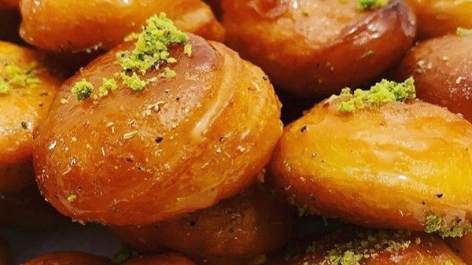

الوصفات الكويتية


صب القفشه

المقادير
- 1 ½ كوب دقيق أبيض
- 2 بيضة
- زعفران منقوع
- 1 ملعقة كبيرة سكر
- 1 ملعقة صغيرة ملح
- 2 ملعقة كبيرة نشا
- 2 ملعقة كبيرة بودرة حليب
- 1 ملعقة كبيرة خميرة
- 1 ملعقة صغيرة هيل مطحون
- زيت للقلي
- شيره
طريقة التحضير
- نضع الدقيق الأبيض في وعاء و النشا والحليب البودرة والخميرة والسكر والملح والهيل والبيض والزعفران ونخلط المكونات جيداً ونتركها تختمر ساعة
- نضع القليل من الزيت في مقلاة ونضع ملعقه صغيرة من العجينة في المقلاة ونقليها من الطرفين على نار هادئة حتى تصبح ذهبية
- نصفيها جيداً من الزيت وعندما تنتهي كمية العجين نضعها في الشيرة وتقدم